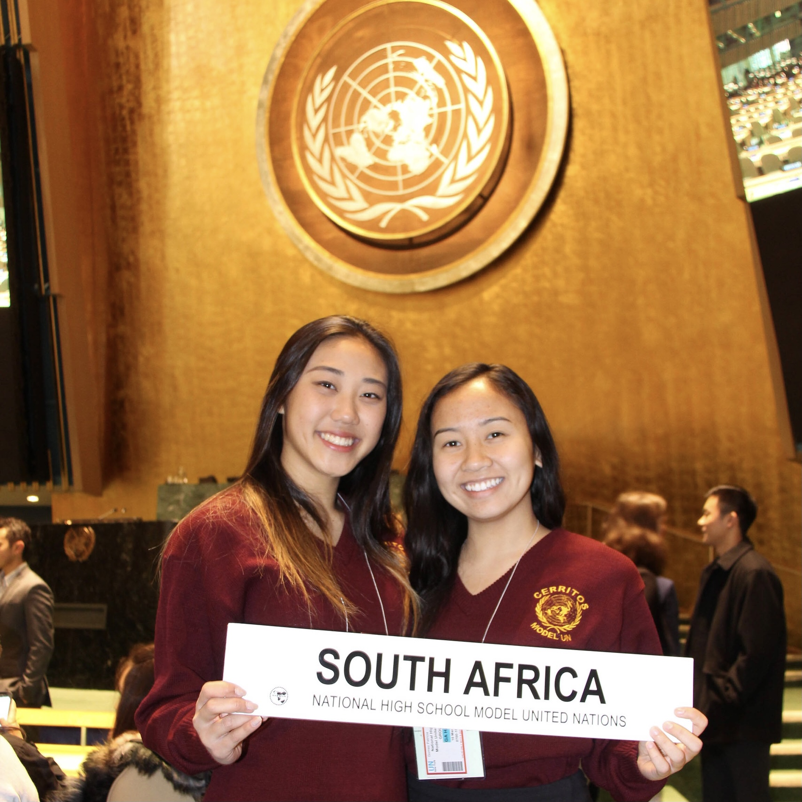
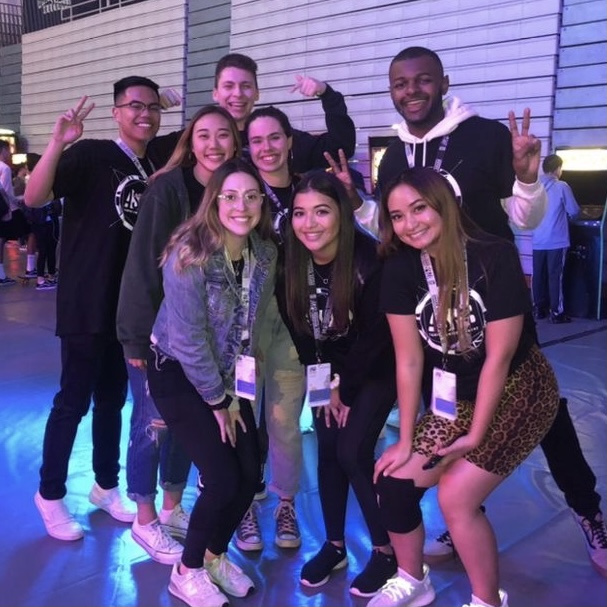
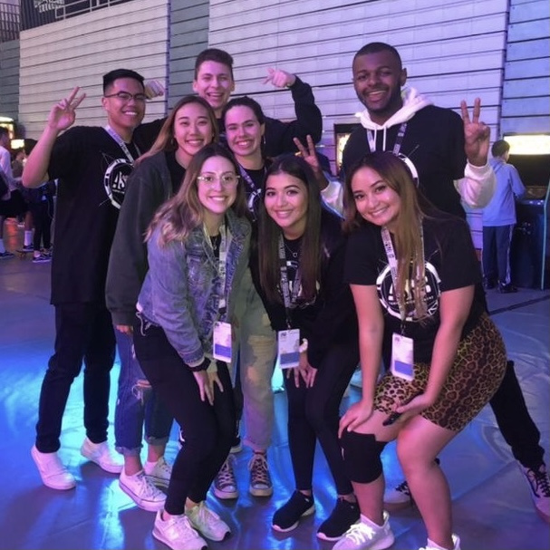

Sophia Kwack
I am currently a student at UCR, majoring in Public Policy. I aim to have a focus on social, cultural, and family policy, and help put policies in place that are effective, efficient, and empathetic. I want to eventually work with non-profit or non-governmental organizations as a public relations manager or program manager, and work with a team towards the goal of helping the unwanted and overlooked.
I've been involved with programs such as Model United Nations, which has allowed me to familiarize myself with issues all around the world, and practice researching and developing solutions that are feasible and will alleviate the issue at hand. Through MUN, I've also become highly experienced in public speaking, communicating my ideas and collaborating with other delegates, and leading a group to present a formal resolution docket.
I've also been able to hone my leadership skills through involvement in organizations such as the Associated Students Program Board at UCR, where I gained experience in putting together different events, special guests, managing student body attendance, and contributing to student body entertainment.
Experience
Concerts Intern
• Organized events for student body entertainment
• Booked artists to come and perform
• Managed student body attendance
Server, Cashier
• Operated cash register, brewed drinks, and prepared menu items
• Served 50-150 customers per shift
Volunteer Assistant
• Assisted seniors with daily needs
• Served food and played board games with the seniors
• Cleaned various locations in the facility
• Attended every Saturday for 4 hours
Education
UC Riverside
Portfolio




